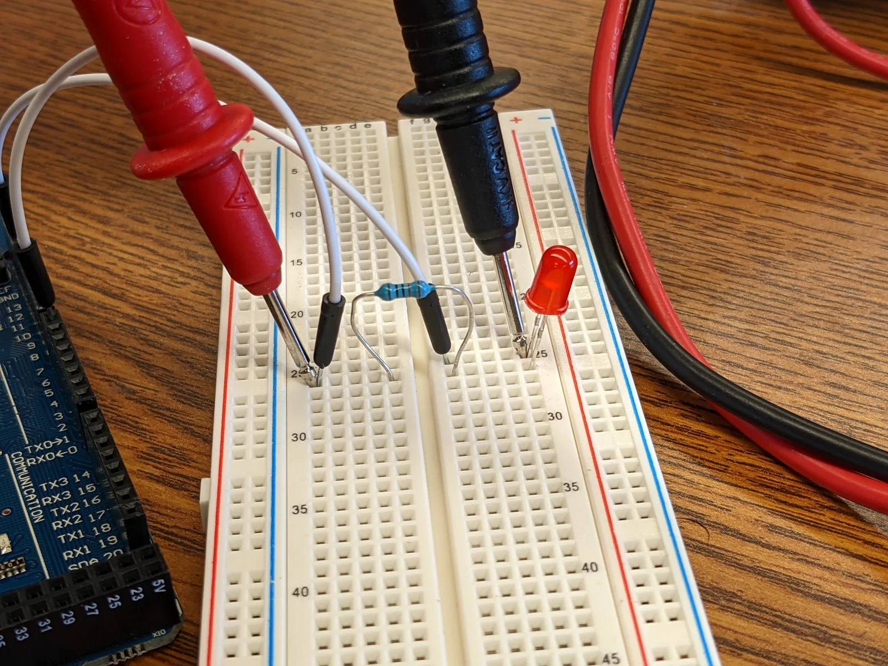

Mittaukset virtapiirissä
Miksi virtamittari kytketään piiriin eri tavalla kuin jännitemittari? Mitä tapahtuu, jos kytkennät menevät sekaisin?
Pohjatiedot
- Sähkövirta on varauksen virtausta johtimen poikkileikkauksen läpi. Sen yksikkö on ampeeriluku Virtapiiri, sähkövirta ja jännite
- Jännite on kahden pisteen välinen suure. Sen yksikkö on volttiluku Virtapiiri, sähkövirta ja jännite
- Mittaustuloksella on aina epävarmuus. Resoluutio on pienin askel, jonka mittalaite voi näyttääluku Mittaaminen ja mittauksen luotettavuus
Ydinpolku: tee vaiheet järjestyksessä. Ydinpolulla ei vain lasketa. Siinä myös tutkitaan, selitetään ja piirretään kuvaajia. Valinnainen-tehtävät ovat lisäharjoittelua. Valinnaisia tehtäviä on 5.
Luvun tärkeät käsitteet Vapaaehtoinen
Tutustu luvun tärkeisiin käsitteisiin. Voit kirjoittaa niiden merkitykset sinulle vahvimmalla kielellä tai useammalla kielellä.
- Virtamittari
- Mittari, joka mittaa sen läpi kulkevan sähkövirran. Se kytketään piiriin sarjaan.
- Jännitemittari
- Mittari, joka mittaa jännitteen kahden pisteen välillä. Se kytketään mitattavan osan rinnalle.
- Yleismittari
- Mittari, jolla voi mitata esimerkiksi virtaa, jännitettä ja resistanssia. Suure valitaan valitsimella.
- Mittausalue
- Suurin arvo, jonka mittari näyttää valitulla asennolla.
Pohdinta
Fysiikan työpöydällä on piiri, jossa paristo, lamppu ja vastus ovat peräkkäin. Pöydällä on myös yleismittari ja kaksi mittajohtoa. Tehtävä kuulostaa helpolta: mittaa lampun virta ja jännite. Mittajohtojen paikka ja valitsimen asento ratkaisevat kuitenkin, mitä näyttö kertoo. Väärin kytketty mittari voi muuttaa piirin toimintaa.
Miten virtamittari ja jännitemittari kytketään piiriin? Miksi juuri niin?
Valinnainen Kertaa: virta ja jännite
Ennusta
Tee ennusteet ennen tutkimista 2 kysymystä
Ennuste 1: virta ennen ja jälkeen lampun
Ennuste 2: jännitemittari sarjaan
Tutki
Simulaatio
Käyttöohje
Mittarin kytkentä valitsee, mihin mittajohdot kosketetaan. Ne voivat olla sarjassa jommassakummassa yläjohdon aukossa. Ne voivat olla myös lampun, vastuksen tai pariston rinnalla. Valitsin valitsee suureen ja mittausalueen, kuten oikean yleismittarin kiertokytkin. Virta-alueella $10\,\text{A}$ punainen johto siirtyy omaan liittimeensä. Paristoja muuttaa paristojen määrää. Näyttö näyttää lukeman alueen resoluutiolla. Jos arvo on yli alueen, näytössä on OL. Violetit nuolet näyttävät virran suunnan pariston plusnavasta miinusnapaan, kun piirissä kulkee virtaa.
Mallin oletukset
Paristot ovat ihanteellisia: kunkin jännite on $1{,}5\,\text{V}$ virrasta riippumatta. Lampun resistanssi on mallissa vakio $15\,\Omega$. Oikean hehkulampun resistanssi kasvaa, kun se lämpenee. Vastuksen resistanssi on $30\,\Omega$. Mittarin oma resistanssi on jännitealueilla $10\,\text{M}\Omega$, alueella $200\,\text{mA}$ se on $1{,}0\,\Omega$ ja alueella $10\,\text{A}$ se on $0{,}010\,\Omega$. Jos mittarin läpi kulkee suurempi virta kuin alue näyttää, sulake palaa ja mittari irtoaa piiristä. Mallissa uusi sulake on paikallaan heti, kun kytkentää tai valitsinta muutetaan. Lukemat ovat mallin laskemia arvoja, eivät mittauksia.
Laskennan selitys
Malli ratkaisee piirin virran ja jännitteet resistanssien avulla, kuten luvussa Resistanssi ja Ohmin laki. Mittari on piirissä yhtenä osana oman resistanssinsa kanssa. Siksi alueella $200\,\text{mA}$ virta on $97{,}8\,\text{mA}$ eikä $100\,\text{mA}$. Mittarin oma resistanssi pienentää virtaa hieman. Alueella $10\,\text{A}$ eroa ei näy. Näytön lukema pyöristetään alueen resoluutioon: $0{,}001\,\text{V}$, $0{,}01\,\text{V}$, $0{,}1\,\text{mA}$ tai $0{,}01\,\text{A}$. Mallissa lamppu palaa, kun sen teho on vähintään $4\,\text{mW}$.
Valitse mittajohtojen paikka ja valitsimen asento. Seuraa näytön lukemaa ja lamppua.
Koe 1: virtamittarin paikka
Testaa ennuste 1. Valitsin on alueella $200\,\text{mA}$, ja paristoja on kolme. Muuta vain mittarin kytkentää. Kirjaa lukema ainakin paikoissa sarjaan ennen lamppua ja sarjaan lampun ja vastuksen väliin. Kokeile lopuksi myös lampun rinnalle. Mitä lampulle tapahtuu? Mitä mittari näyttää? Mitä mittarille tapahtuu?
Alkutila: kytkentä: sarjaan ennen lamppua, valitsin: virta, alue $200\,\text{mA}$, paristot: kolme paristoa. Vakiona: valitsin, paristot. Muutetaan: kytkentä.
| kytkentä | $I$ $(\text{mA})$ | lamppu |
|---|
Lisää tutkittavaa 3 tehtävää
Koe 2: jännitemittari rinnalle ja sarjaan
Testaa ennuste 2. Valitsin on alueella $20\,\text{V}$, ja paristoja on kolme. Muuta vain mittarin kytkentää. Kirjaa lukema ainakin paikoissa lampun rinnalle ja sarjaan ennen lamppua. Kirjaa mieluiten myös pariston rinnalle. Missä kytkennässä lamppu palaa? Minkä jännitteen mittari näyttää kussakin kytkennässä?
Alkutila: kytkentä: lampun rinnalle, valitsin: jännite, alue $20\,\text{V}$, paristot: kolme paristoa. Vakiona: valitsin, paristot. Muutetaan: kytkentä.
| kytkentä | $U$ $(\text{V})$ | lamppu |
|---|
Valinnainen Koe 3: mittausalue
Mittari on lampun rinnalla, ja paristoja on kolme. Muuta vain valitsimen asentoa. Kirjaa lukema alueilla $20\,\text{V}$ ja $2\,\text{V}$. Kuinka monta desimaalia näyttö näyttää kummallakin alueella? Siirrä sitten mittari vastuksen rinnalle alueelle $2\,\text{V}$. Mitä näyttö kertoo? Mitä silloin pitää tehdä?
Alkutila: kytkentä: lampun rinnalle, valitsin: jännite, alue $20\,\text{V}$, paristot: kolme paristoa. Vakiona: paristot. Muutetaan: valitsin.
| valitsin | $U$ $(\text{V})$ | lamppu |
|---|
Johtopäätös: miten mittarit kytketään
Kirjoita taulukoidesi perusteella: miten virtamittarin lukema riippui sen paikasta haarattomassa piirissä? Mitä tapahtui, kun jännitemittari oli lampun rinnalla? Mitä tapahtui, kun se oli sarjassa? Selitä havainnot mittarien resistanssin avulla.
Mallivastaus
Virtamittari näytti $97{,}8\,\text{mA}$ sekä ennen lamppua että lampun ja vastuksen välissä. Haarattomassa piirissä sama varaus kulkee jokaisen osan läpi, joten virta on joka kohdassa sama. Lampun rinnalla jännitemittari näytti $1{,}50\,\text{V}$, ja lamppu paloi. Mittarin suuren resistanssin kautta ei juuri kulje virtaa lampun ohi. Sarjaan kytkettynä sama mittari näytti $4{,}50\,\text{V}$, ja lamppu sammui. Mittarin suuri resistanssi pienensi koko piirin virran lähes nollaan. Lähes koko pariston jännite jäi mittarin napojen välille. Jos virtamittari kytkettiin lampun rinnalle, lamppu sammui. Virta kulki silloin pienen resistanssin mittarin kautta lampun ohi. Siksi virtamittari kytketään sarjaan ja jännitemittari rinnalle. Arvot ovat mallin laskemia.
Arvioi oma vastauksesi
Merkitse kohdat, jotka sinun vastauksessasi jo on.
Kertaa asia teoriasta ja harjoittele tehtävillä.
Teoria
Ydinajatus
Virtamittari kytketään sarjaan
Virtamittari mittaa, kuinka suuri sähkövirta kulkee sen läpi. Siksi mitattavan virran täytyy kulkea mittarin kautta. Piiri avataan siitä kohdasta, jonka virta halutaan tietää. Mittari asetetaan aukkoon. Silloin mittari on sarjassa muiden osien kanssa. Sarjassa tarkoittaa, että osat ovat peräkkäin samalla johdolla. Haarattomassa piirissä virta on joka kohdassa sama. Haaraton piiri on piiri, jossa virralla on vain yksi reitti. Virta on joka kohdassa sama, koska varausta ei katoa eikä kerry minnekään. Lamppu muuttaa sähköenergiaa valoksi ja hehkulangan sisäenergiaksi. Lamppu ei kuitenkaan kuluta virtaa. Virtamittarin voi siis kytkeä mihin tahansa kohtaan haaratonta piiriä. Se näyttää aina saman lukeman.
Jännitemittari kytketään rinnalle
Jännite on kahden pisteen välinen suure (luku Virtapiiri, sähkövirta ja jännite). Jännitemittari mittaa jännitteen niiden kahden pisteen välillä, joihin sen johdot kosketetaan. Lampun jännite mitataan koskettamalla lampun kumpaakin napaa. Piiriä ei avata. Mittari tulee lampun rinnalle. Rinnalla tarkoittaa, että mittari on lampun vieressä omalla reitillään. Mittarin punainen johto kosketetaan siihen napaan, joka on lähempänä pariston plusnapaa. Silloin lukema on positiivinen.
Yleismittari
Laboratoriossa virtaa ja jännitettä mitataan yleensä yleismittarilla. Sama laite mittaa valitsimen asennosta riippuen jännitettä, virtaa ja usein muitakin suureita. Musta johto kuuluu aina liittimeen COM. Punainen johto kuuluu liittimeen $\text{V}\ \text{mA}$, kun mitataan jännitettä ja pieniä virtoja. Suuria virtoja mitattaessa se kuuluu liittimeen $10\,\text{A}$. Valitsimella valitaan sekä suure että mittausalue. Mittausalue on suurin arvo, jonka mittari näyttää tällä asennolla. Alueella $20\,\text{V}$ näyttö näyttää enintään $19{,}99\,\text{V}$. Jos jännite on suurempi, näyttöön tulee OL (englanniksi overload). Se tarkoittaa, että arvo on yli mittausalueen.
Mittausalueen valinta
Pienemmällä alueella näyttö näyttää enemmän desimaaleja. Alueella $20\,\text{V}$ lampun jännite näkyy muodossa $1{,}50\,\text{V}$. Alueella $2\,\text{V}$ se näkyy muodossa $1{,}500\,\text{V}$. Viimeinen numero kertoo resoluution. Resoluutio on pienin askel, jonka näyttö voi ottaa. Siksi mitataan pienimmällä alueella, jolle lukema vielä mahtuu. Jos suuruusluokkaa ei tiedetä, aloitetaan suurimmalta alueelta ja siirrytään pienempään. Virtaa mitattaessa tämä on myös turvallisuuskysymys. Liian suuri virta polttaa mittarin sulakkeen.
Mittari vaikuttaa piiriin
Jokaisella osalla on resistanssi. Resistanssi kertoo, kuinka voimakkaasti osa vastustaa sähkövirtaa. Suureeseen palataan luvussa Resistanssi ja Ohmin laki. Sarjaan kytketyn virtamittarin resistanssi on hyvin pieni. Silloin mittari ei juuri pienennä virtaa, jota se mittaa. Rinnalle kytketyn jännitemittarin resistanssi on hyvin suuri, esimerkiksi $10\,\text{M}\Omega$. Silloin mittarin kautta ei juuri kulje virtaa osan ohi. Ihanteellinen mittari ei muuttaisi piiriä lainkaan. Oikea mittari muuttaa piiriä vähän. Se on yksi mittausepävarmuuden lähde.
Väärin kytketty mittari muuttaa piiriä paljon. Oletetaan, että virtamittari kytketään lampun rinnalle. Silloin virta kulkee lähes kokonaan pienen resistanssin mittarin kautta lampun ohi. Lamppu sammuu. Virta voi kasvaa niin suureksi, että mittarin sulake palaa. Kun sulake on palanut, mittari on poissa piiristä. Silloin lamppu syttyy uudelleen. Virtatietä, joka ohittaa osan, sanotaan oikosuluksi. Oletetaan sitten, että jännitemittari kytketään sarjaan. Silloin sen suuri resistanssi pienentää koko piirin virran lähes nollaan. Lamppu sammuu. Mittari näyttää suunnilleen pariston jännitteen.

Yleismittarin virheraja
Valmistajan ilmoittama virheraja
Mittarin lukema ei ole täsmälleen mitattavan suureen oikea arvo. Digitaalisen mittarin valmistaja ilmoittaa käyttöohjeessa jokaiselle alueelle virherajan. Se kirjoitetaan muodossa $\pm(p + n\ \text{numeroa})$. Virheraja on prosenttiosuus $p$ lukemasta ja siihen lisätään $n$ viimeisen numeron askelta. Valmistajan ilmoittama virheraja kertoo, kuinka paljon lukema voi enintään poiketa oikeasta arvosta. Tämä pätee, kun mittari on kunnossa ja sitä käytetään ohjeen mukaan. Mittauksen kokonaisepävarmuuteen voivat vaikuttaa myös mittaustapa, mittarin vaikutus piiriin ja muut virhelähteet.
| Alue | Resoluutio | Virheraja |
|---|---|---|
| jännite $2\,\text{V}$ | $0{,}001\,\text{V}$ | $\pm(0{,}5\,\% + 2\ \text{numeroa})$ |
| jännite $20\,\text{V}$ | $0{,}01\,\text{V}$ | $\pm(0{,}5\,\% + 2\ \text{numeroa})$ |
| virta $200\,\text{mA}$ | $0{,}1\,\text{mA}$ | $\pm(1{,}0\,\% + 2\ \text{numeroa})$ |
| virta $10\,\text{A}$ | $0{,}01\,\text{A}$ | $\pm(2{,}0\,\% + 3\ \text{numeroa})$ |
Virherajan laskeminen
Lukeman $x$ virheraja on
$$\Delta x = p \cdot x + n \cdot r$$
Tässä $\Delta x$ on virheraja ja $x$ on lukema. Kirjain $p$ on valmistajan ilmoittama prosenttiosuus desimaalilukuna ($0{,}5\,\% = 0{,}005$). Kirjain $n$ on numeroiden määrä ja $r$ on alueen resoluutio. Tulos kirjoitetaan muodossa $x \pm \Delta x$, esimerkiksi $U = 4{,}50\,\text{V} \pm 0{,}04\,\text{V}$. Merkintä on sama kuin virhe-arviossa. Tässä $\Delta x$ on kuitenkin mittarin oma virheraja. Se ei ole koko mittauksen epävarmuus. Eri mittausten tarkkuutta verrataan suhteellisella virherajalla
$$\frac{\Delta x}{x}$$
Se on pelkkä luku, jolla ei ole yksikköä. Se ilmoitetaan yleensä prosentteina.
Miksi pienin sopiva alue
Tämän mittarin jännitealueilla $p$ ja $n$ ovat samat. Silloin prosenttiosa $p \cdot x$ on sama kaikilla alueilla. Numeroiden osuus $n \cdot r$ sen sijaan pienenee kymmenesosaan, kun siirrytään kymmenen kertaa pienemmälle alueelle. Jos lukema on pieni alueeseen verrattuna, numeroiden osuus on suurin. Esimerkiksi $0{,}02\,\text{A}$:n virta alueella $10\,\text{A}$ on lähes arvaus. Jo kolme viimeisen numeron askelta on nimittäin $0{,}03\,\text{A}$.
Yleinen virhekäsitys
Moni ajattelee, että suurin mittausalue on aina paras. Silloin mittari ei mene yli alueen eikä sulake pala. Suurimmalta alueelta kannattaa kyllä aloittaa, kun suuruusluokkaa ei tiedetä. Lopullinen lukema luetaan kuitenkin pienimmältä alueelta, jolle arvo mahtuu. Suurella alueella viimeinen numero on karkea. Pienen arvon virheraja voi olla yhtä suuri kuin itse lukema. Toinen yleinen virhe on kytkeä virtamittari osan rinnalle samalla tavalla kuin jännitemittari. Virtamittari kytketään aina sarjaan.
Tiivistelmä
- Virtamittari kytketään sarjaan. Piiri avataan ja mittari asetetaan aukkoon. Haarattomassa piirissä virta on joka kohdassa sama.
- Jännitemittari kytketään rinnalle eli niiden kahden pisteen väliin, joiden välinen jännite mitataan.
- Yleismittarin valitsimella valitaan suure ja mittausalue. OL tarkoittaa, että arvo on yli alueen. Musta johto kuuluu liittimeen COM.
- Mitataan pienimmällä alueella, jolle lukema mahtuu. Tuntemattoman arvon mittaus aloitetaan suurimmalta alueelta.
- Virtamittarin resistanssi on hyvin pieni ja jännitemittarin hyvin suuri. Väärin kytkettynä virtamittari tekee oikosulun ja jännitemittari pysäyttää virran.
- Virheraja on $\Delta x = p \cdot x + n \cdot r$ ja suhteellinen virheraja on $\tfrac{\Delta x}{x}$.
Valinnainen Palaa ennusteisiisi
Vertaa ennusteitasi kokeiden lukemiin. Palaa sitten alun kysymykseen: miksi virtamittari ja jännitemittari kytketään piiriin eri tavoin?
Haluaisitko muuttaa ennustettasi?
Esimerkit
Kun olet lukenut teorian, tee ohjatut esimerkit. Ensin katsot mallilaskun vaihe vaiheelta. Sitten teet valinnat itse. Vihjeet auttavat, jos jäät jumiin.
Esimerkki 1: Yleismittarin mittausalue
Lampun jännite mitataan yleismittarilla kahdesti. Alueella $20\,\text{V}$ näyttö näyttää $1{,}50\,\text{V}$. Alueella $2\,\text{V}$ näyttö näyttää $1{,}500\,\text{V}$. Kummankin alueen virheraja on $\pm(0{,}5\,\% + 2\ \text{numeroa})$. Kuinka suuri on lukeman virheraja kummallakin alueella? Kumpi alue kannattaa valita?
Vaihe 1/7
Tunnetut ja kysytty. Lukemat ovat $U_{20} = 1{,}50\,\text{V}$ (resoluutio $r_{20} = 0{,}01\,\text{V}$) ja $U_2 = 1{,}500\,\text{V}$ (resoluutio $r_2 = 0{,}001\,\text{V}$). Lisäksi $p = 0{,}5\,\%$ ja $n = 2$. Kysytään virherajoja $\Delta U_{20}$ ja $\Delta U_2$.
Vaihe 2/7
Periaate. Valmistajan virheraja on osuus lukemasta ja siihen lisätty kaksi viimeisen numeron askelta. Lukema on molemmilla alueilla sama. Alueet eroavat siis vain resoluutioltaan.
Vaihe 3/7
Kaava ratkaistuna. Kaava antaa virherajan suoraan. Siihen sijoitetaan kunkin alueen oma resoluutio:
$$\begin{aligned} \Delta U_{20} &= p \cdot U_{20} + n \cdot r_{20} \\ \Delta U_2 &= p \cdot U_2 + n \cdot r_2 \end{aligned}$$
Vaihe 4/7
Yksikkömuunnokset. Prosenttiosuus kirjoitetaan desimaalilukuna: $p = 0{,}5\,\% = 0{,}005$. Muita muunnoksia ei tarvita, koska lukemat ja resoluutiot ovat voltteina.
Vaihe 5/7
Sijoitus. $$\begin{aligned} &\Delta U_{20} \\ &= 0{,}005 \cdot 1{,}50\,\text{V} + 2 \cdot 0{,}01\,\text{V} \\ &= 0{,}0275\,\text{V} \\[6pt] &\Delta U_2 \\ &= 0{,}005 \cdot 1{,}500\,\text{V} + 2 \cdot 0{,}001\,\text{V} \\ &= 0{,}0095\,\text{V} \end{aligned}$$
Vaihe 6/7
Tulos. Alueella $20\,\text{V}$ jännite on $1{,}50\,\text{V} \pm 0{,}03\,\text{V}$. Alueella $2\,\text{V}$ se on $1{,}500\,\text{V} \pm 0{,}010\,\text{V}$. Suhteelliset virherajat ovat $2\,\%$ ja $0{,}67\,\%$. Virheraja pyöristetään samalla tavalla kuin virhe-arvio: yhteen merkitsevään numeroon. Jos ensimmäinen numero on 1, se pyöristetään kahteen merkitsevään numeroon. Alue $2\,\text{V}$ kannattaa valita. Sen virheraja on noin kolmasosa.
Vaihe 7/7
Järkevyys. Prosenttiosa on molemmilla alueilla sama, $0{,}0075\,\text{V}$. Ero tulee kokonaan numeroiden osuudesta. Alueella $20\,\text{V}$ se on kymmenkertainen: $0{,}02\,\text{V}$ eikä $0{,}002\,\text{V}$. Pienempi alue ei voi olla epätarkempi, kun lukema mahtuu sille ja alueiden prosenttiosa on sama.
Valinnainen Esimerkki 2: Etsi virhe
Esimerkki 3: Sovella uuteen tilanteeseen
LED-valon virta mitataan ensin yleismittarin alueella $10\,\text{A}$, koska kaveri sanoo sen olevan turvallisin. Näyttö näyttää $0{,}02\,\text{A}$. Alueen resoluutio on $0{,}01\,\text{A}$ ja virheraja $\pm(2{,}0\,\% + 3\ \text{numeroa})$.
Kuinka monta prosenttia lukemasta virheraja on?
Vihje 1: ohjaava kysymys
Virheraja koostuu prosenttiosasta ja numeroiden osuudesta. Kumpi niistä on tässä suurempi?
Vihje 2: mikä yhteys
Yksi numero on alueen resoluutio $0{,}01\,\text{A}$. Kolme numeroa on siis $0{,}03\,\text{A}$. Prosenttiosa on $0{,}020 \cdot 0{,}02\,\text{A}$.
Vihje 3: välivaihe
Jaa tämä lukemalla $0{,}02\,\text{A}$.
Näytä ratkaisu
Annettu
lukema $I = 0{,}02\,\text{A}$ alueella $10\,\text{A}$, resoluutio $r = 0{,}01\,\text{A}$, virheraja $\pm(2{,}0\,\% + 3\ \text{numeroa})$
Kysytty
suhteellinen virheraja $\tfrac{\Delta I}{I}$ prosentteina
Periaate
Valmistajan virheraja on prosenttiosuus lukemasta ja siihen lisätty kolme viimeisen numeron askelta. Jos lukema on hyvin pieni alueeseen verrattuna, numeroiden osuus ei pienene lukeman mukana. Silloin se on virherajassa suurin osa.
Kaava
$\Delta I = p \cdot I + n \cdot r$, joten
$$\frac{\Delta I}{I} = \frac{p \cdot I + n \cdot r}{I}$$
Muunnokset
$p = 2{,}0\,\% = 0{,}020$. Virrat ovat ampeereina.
Sijoitus
joten
Vastaus
noin $150\,\%$. Lukema $0{,}02\,\text{A}$ on annettu yhdellä merkitsevällä numerolla. Siksi tulos on vain suuruusluokka.
Järkevyys
Jo kolme askelta, $0{,}03\,\text{A}$, on suurempi kuin koko lukema. Virherajan on siis oltava yli $100\,\%$. Lukema ei kerro virrasta juuri mitään. Alueella $200\,\text{mA}$ sama virta voisi näkyä esimerkiksi muodossa $18{,}6\,\text{mA}$. Silloin virheraja olisi $0{,}186\,\text{mA} + 0{,}2\,\text{mA} = 0{,}386\,\text{mA}$ eli noin $2\,\%$. Kun suuruusluokka tiedetään, siirrytään pienimmälle sopivalle alueelle.
Tehtävät
Taso 1 · perusharjoitus 8 tehtävää
Yksi kaava tai yksi päättelyaskel. Tee ensin ydintehtävät. Loput ovat lisäharjoitusta.
- Tehtävä 2-1Ydintehtävä
Auton akun jännite mitataan yleismittarilla alueella $20\,\text{V}$, ja näyttö näyttää $12{,}46\,\text{V}$. Tällä alueella resoluutio on $0{,}01\,\text{V}$. Käyttöohjeen mukaan virheraja on $\pm(0{,}5\,\% + 2\ \text{numeroa})$.
Kuinka suuri on lukeman virheraja? Anna vastaus voltteina.
Vastaus
$0{,}08\,\text{V}$
Näytä ratkaisu
Annettu
lukema $U = 12{,}46\,\text{V}$ alueella $20\,\text{V}$, resoluutio $r = 0{,}01\,\text{V}$, virheraja $\pm(0{,}5\,\% + 2\ \text{numeroa})$
Kysytty
lukeman virheraja $\Delta U$ voltteina
Periaate
Valmistajan ilmoittama virheraja koostuu kahdesta osasta. Toinen osa on osuus lukemasta. Toinen osa on muutama viimeisen numeron askel. Yksi ”numero” tarkoittaa alueen resoluutiota. Se on pienin askel, jonka näyttö voi ottaa. Tässä se on $0{,}01\,\text{V}$.
Kaava
$\Delta U = p \cdot U + n \cdot r$
Muunnokset
$p = 0{,}5\,\% = 0{,}005$. Muita muunnoksia ei tarvita, koska lukema ja resoluutio ovat voltteina.
Sijoitus
$\Delta U$$= 0{,}005 \cdot 12{,}46\,\text{V} + 2 \cdot 0{,}01\,\text{V}$$= 0{,}0623\,\text{V} + 0{,}02\,\text{V}$$= 0{,}0823\,\text{V}$Vastaus
$0{,}08\,\text{V}$
Vastauksessa on yksi merkitsevä numero, koska virheraja pyöristetään kuten virhe-arvio. Laskimen arvo on $0{,}0823\,\text{V}$.
Järkevyys
Prosenttiosa on noin puolet sadasosasta $12\,\text{V}$:sta eli noin $0{,}06\,\text{V}$. Kaksi askelta lisää $0{,}02\,\text{V}$. Yhteensä tulee noin $0{,}08\,\text{V}$. Virheraja on alle prosentti lukemasta. Se sopii hyvään mittariin.
- Tehtävä 2-2
LED-nauhan virta mitataan yleismittarin alueella $200\,\text{mA}$, ja näyttö näyttää $146{,}3\,\text{mA}$. Tällä alueella resoluutio on $0{,}1\,\text{mA}$ ja virheraja on $\pm(1{,}0\,\% + 2\ \text{numeroa})$. Kuinka suuri on lukeman virheraja? Anna vastaus milliampeereina.
Vastaus
$1{,}7\,\text{mA}$
Näytä ratkaisu
Annettu
lukema $I = 146{,}3\,\text{mA}$ alueella $200\,\text{mA}$, resoluutio $r = 0{,}1\,\text{mA}$, virheraja $\pm(1{,}0\,\% + 2\ \text{numeroa})$
Kysytty
lukeman virheraja $\Delta I$ milliampeereina
Periaate
Virheraja on prosenttiosuus lukemasta ja siihen lisätty kaksi viimeisen numeron askelta. Alueella $200\,\text{mA}$ viimeinen numero on milliampeerin kymmenesosa. Yksi askel on siis $0{,}1\,\text{mA}$.
Kaava
$\Delta I = p \cdot I + n \cdot r$
Muunnokset
$p = 1{,}0\,\% = 0{,}010$. Lukema ja resoluutio ovat jo milliampeereina.
Sijoitus
$\Delta I$$= 0{,}010 \cdot 146{,}3\,\text{mA} + 2 \cdot 0{,}1\,\text{mA}$$= 1{,}463\,\text{mA} + 0{,}2\,\text{mA}$$= 1{,}663\,\text{mA}$Vastaus
$1{,}7\,\text{mA}$
Vastauksessa on kaksi merkitsevää numeroa, koska virherajan ensimmäinen numero on 1.
Järkevyys
Prosentti $146\,\text{mA}$:sta on noin $1{,}5\,\text{mA}$. Numeroiden osuus $0{,}2\,\text{mA}$ on sitä pienempi, koska lukema on lähellä alueen ylärajaa. Tulos on vähän yli prosentin lukemasta.
- Tehtävä 2-3
Verkkolaitteen jännitteeksi mitataan $8{,}00\,\text{V}$. Lukeman virheraja on $0{,}06\,\text{V}$. Kuinka suuri on suhteellinen virheraja? Anna vastaus prosentteina.
Vastaus
$0{,}8\,\%$
Näytä ratkaisu
Annettu
lukema $U = 8{,}00\,\text{V}$, virheraja $\Delta U = 0{,}06\,\text{V}$
Kysytty
suhteellinen virheraja $s$ prosentteina
Periaate
Suhteellinen virheraja kertoo, kuinka suuri osa lukemasta virheraja on. Sen avulla voi verrata eri suuruisten mittausten tarkkuutta.
Kaava
$s = \dfrac{\Delta U}{U}$
Muunnokset
Muunnoksia ei tarvita. Molemmat ovat voltteina, ja yksikkö supistuu. Tulos kerrotaan sadalla, jotta se saadaan prosentteina.
Sijoitus
$s$$= \dfrac{0{,}06\,\text{V}}{8{,}00\,\text{V}}$$= 0{,}0075$$= 0{,}75\,\%$Vastaus
$0{,}8\,\%$
Vastauksessa on yksi merkitsevä numero, kuten virherajassa $0{,}06\,\text{V}$.
Järkevyys
Prosentti $8\,\text{V}$:sta olisi $0{,}08\,\text{V}$. Virheraja $0{,}06\,\text{V}$ on vähän pienempi. Tuloksen pitää siis olla vähän alle $1\,\%$, ja $0{,}8\,\%$ on.
- Tehtävä 2-4
Piirissä on peräkkäin paristo, lamppu ja vastus. Piirissä ei ole haaroja. Virtamittari on kytketty sarjaan pariston ja lampun väliin, ja se näyttää $0{,}180\,\text{A}$. Mittari siirretään lampun ja vastuksen väliin.
Mitä mittari näyttää nyt? Oletetaan, ettei mittarin siirtäminen muuta piiriä. Anna vastaus ampeereina.
Vastaus
$0{,}180\,\text{A}$
Näytä ratkaisu
Annettu
haaraton piiri, jossa paristo, lamppu ja vastus ovat peräkkäin. Virta pariston ja lampun välissä on $I = 0{,}180\,\text{A}$.
Kysytty
virtamittarin lukema lampun ja vastuksen välissä ampeereina
Periaate
Haarattomassa piirissä virta on joka kohdassa sama. Varausta ei katoa eikä kerry mihinkään. Siksi jokaisen poikkileikkauksen läpi kulkee sekunnissa yhtä paljon varausta. Lamppu muuttaa sähköenergiaa valoksi ja hehkulangan sisäenergiaksi. Lamppu ei kuitenkaan kuluta virtaa.
Kaava
$I_\text{jälkeen} = I_\text{ennen}$
Muunnokset
Muunnoksia ei tarvita, koska virta on ampeereina.
Sijoitus
$I_\text{jälkeen} = 0{,}180\,\text{A}$
Vastaus
$0{,}180\,\text{A}$
Vastauksessa on kolme merkitsevää numeroa, kuten mittarin lukemassa.
Järkevyys
Jos lampun jälkeen kulkisi pienempi virta, lamppuun kertyisi koko ajan lisää varausta. Sellaista ei havaita. Simulaatiossa virtamittari näytti molemmissa kohdissa saman lukeman.
- Tehtävä 2-5
Uuden AA-pariston jännitteeksi mitataan alueella $2\,\text{V}$ lukema $1{,}587\,\text{V}$. Tällä alueella resoluutio on $0{,}001\,\text{V}$ ja virheraja $\pm(0{,}5\,\% + 2\ \text{numeroa})$. Kuinka suuri on lukeman virheraja? Anna vastaus voltteina.
Vastaus
$0{,}010\,\text{V}$
Näytä ratkaisu
Annettu
lukema $U = 1{,}587\,\text{V}$ alueella $2\,\text{V}$, resoluutio $r = 0{,}001\,\text{V}$, virheraja $\pm(0{,}5\,\% + 2\ \text{numeroa})$
Kysytty
lukeman virheraja $\Delta U$ voltteina
Periaate
Valmistajan virheraja on osuus lukemasta ja siihen lisätty kaksi viimeisen numeron askelta. Alueella $2\,\text{V}$ näytössä on kolme desimaalia. Askel on siis $0{,}001\,\text{V}$.
Kaava
$\Delta U = p \cdot U + n \cdot r$
Muunnokset
$p = 0{,}5\,\% = 0{,}005$. Lukema ja resoluutio ovat voltteina.
Sijoitus
$\Delta U$$= 0{,}005 \cdot 1{,}587\,\text{V} + 2 \cdot 0{,}001\,\text{V}$$= 0{,}007935\,\text{V} + 0{,}002\,\text{V}$$= 0{,}009935\,\text{V}$Vastaus
$0{,}010\,\text{V}$
Eli $10\,\text{mV}$. Laskimen arvo $0{,}009935\,\text{V}$ pyöristyy yhteen merkitsevään numeroon $0{,}01\,\text{V}$. Sen ensimmäinen numero on 1, joten virheraja ilmoitetaan kahdella numerolla.
Järkevyys
Puoli prosenttia $1{,}6\,\text{V}$:sta on noin $8\,\text{mV}$. Kaksi askelta lisää $2\,\text{mV}$. Yhteensä tulee noin $10\,\text{mV}$. Alueella $20\,\text{V}$ pelkkä numeroiden osuus olisi $20\,\text{mV}$. Pieni alue on tässä selvästi tarkempi.
- Tehtävä 2-6Ydintehtävä
Haluat mitata yleismittarilla lampun läpi kulkevan virran. Piirissä on paristo ja lamppu. Miten virtamittari kytketään?
Vastaus
Piiri avataan ja mittari asetetaan aukkoon. Silloin lampun virta kulkee mittarin läpi.
Näytä ratkaisu
Kysytty
miten virtamittari kytketään lampun läpi kulkevan virran mittaamiseksi.
Periaate
Virta on varauksen kulkua johtimen poikkileikkauksen läpi. Siksi koko mitattavan virran täytyy kulkea virtamittarin läpi. Virtamittari kytketään sarjaan: piiri avataan ja mittari asetetaan aukkoon. Virtamittarin resistanssi on hyvin pieni. Rinnalle kytkettynä se ohjaisi virran komponentin ohi ja tekisi oikosulun.
Mallivastaus
Piiri avataan esimerkiksi pariston ja lampun välistä, ja virtamittari asetetaan aukkoon. Silloin sama virta kulkee pariston, mittarin ja lampun läpi. Mittari näyttää lampun virran. Mittaria ei liitetä lampun napojen väliin, koska niin kytketään jännitemittari. Virtamittarin pieni resistanssi aiheuttaisi oikosulun. Mittaria ei myöskään liitetä pariston napojen väliin. Sitä ei jätetä ilman johtoja lampun viereen, sillä mittari mittaa vain oman johtimensa läpi kulkevan virran.
- Tehtävä 2-7
Jännitemittari kytketään sen komponentin rinnalle, jonka jännite mitataan. Miksi hyvän jännitemittarin resistanssin pitää olla hyvin suuri?
Vastaus
Mittarin läpi kulkee silloin vain hyvin pieni virta, joten mittari ei juuri muuta piiriä.
Näytä ratkaisu
Kysytty
miksi jännitemittarin resistanssin pitää olla hyvin suuri.
Periaate
Jännitemittari kytketään rinnalle, joten osa piirin virrasta kulkee mittarin kautta. Mitä suurempi mittarin resistanssi on, sitä pienempi virta mittarin läpi kulkee. Virta, joka menee pois komponentilta, muuttaisi juuri sitä jännitettä, jota yritetään mitata.
Mallivastaus
Kun jännitemittarin resistanssi on hyvin suuri, mittarin läpi kulkee vain hyvin pieni virta. Silloin mittari ei vie virtaa mitattavalta komponentilta eikä muuta piiriä. Lukema on lähellä jännitettä, joka komponentilla oli ennen mittaria. Suuri resistanssi ei vahvista jännitettä. Se ei kasvata mittarin läpi kulkevaa virtaa, eikä se liity johtojen kuumenemiseen. Samasta syystä virtamittarin resistanssin pitää olla päinvastoin hyvin pieni.
- Tehtävä 2-8
Aurinkokennon jännite mitataan yleismittarin alueella $20\,\text{V}$, ja näyttö näyttää $5{,}98\,\text{V}$. Tällä alueella resoluutio on $0{,}01\,\text{V}$ ja virheraja $\pm(0{,}5\,\% + 2\ \text{numeroa})$. Ilmoita mittaustulos muodossa $U \pm \Delta U$. Kirjoita vastauslaatikkoon virheraja $\Delta U$ voltteina.
Vastaus
$\Delta U = 0{,}05\,\text{V}$
Näytä ratkaisu
Annettu
lukema $U = 5{,}98\,\text{V}$ alueella $20\,\text{V}$, resoluutio $r = 0{,}01\,\text{V}$, virheraja $\pm(0{,}5\,\% + 2\ \text{numeroa})$
Kysytty
virheraja $\Delta U$ voltteina ja mittaustulos muodossa $U \pm \Delta U$
Periaate
Virheraja on prosenttiosuus lukemasta ja siihen lisätty kaksi viimeisen numeron askelta. Mittaustulos ilmoitetaan lukemana ja virherajana. Virheraja pyöristetään yhteen merkitsevään numeroon.
Kaava
$\Delta U = p \cdot U + n \cdot r$
Muunnokset
$p = 0{,}5\,\% = 0{,}005$. Lukema ja resoluutio ovat jo voltteina.
Sijoitus
$\Delta U$$= 0{,}005 \cdot 5{,}98\,\text{V} + 2 \cdot 0{,}01\,\text{V}$$= 0{,}0299\,\text{V} + 0{,}02\,\text{V}$$= 0{,}0499\,\text{V}$Vastaus
$\Delta U = 0{,}05\,\text{V}$
Vastauksessa on yksi merkitsevä numero, koska ensimmäinen numero on 4. Laskimen arvo on $0{,}0499\,\text{V}$. Mittaustulos on $U = 5{,}98\,\text{V} \pm 0{,}05\,\text{V}$ eli väli $5{,}93$–$6{,}03\,\text{V}$. Lukema kirjoitetaan samalla desimaalien määrällä kuin virheraja.
Järkevyys
Virheraja $0{,}05\,\text{V}$ on alle prosentti lukemasta $5{,}98\,\text{V}$. Lukema on noin kolmasosa alueesta $20\,\text{V}$ ($5{,}98 : 20 = 0{,}30$). Prosenttiosa $0{,}03\,\text{V}$ ja numeroiden osuus $0{,}02\,\text{V}$ ovat samaa suuruusluokkaa. Molemmat siis vaikuttavat.
Taso 2 · soveltava harjoitus 8 tehtävää
Kaksi vaihetta, mittausaineiston käsittely, yksikkömuunnos tai kaavan ratkaiseminen. Tee ensin ydintehtävät. Loput ovat lisäharjoitusta.
- Tehtävä 2-9
Pienen moottorin virta mitataan yleismittarin alueella $10\,\text{A}$, ja näyttö näyttää $0{,}35\,\text{A}$. Tällä alueella resoluutio on $0{,}01\,\text{A}$ ja virheraja $\pm(2{,}0\,\% + 3\ \text{numeroa})$. Kuinka monta prosenttia lukemasta virheraja on?
Vastaus
$11\,\%$
Näytä ratkaisu
Annettu
lukema $I = 0{,}35\,\text{A}$ alueella $10\,\text{A}$, resoluutio $r = 0{,}01\,\text{A}$, virheraja $\pm(2{,}0\,\% + 3\ \text{numeroa})$
Kysytty
suhteellinen virheraja $\dfrac{\Delta I}{I}$ prosentteina
Periaate
Ensin lasketaan virheraja valmistajan ilmoituksesta. Se on osuus lukemasta ja kolme viimeisen numeron askelta. Sitten virherajaa verrataan lukemaan. Jos lukema on pieni alueeseen verrattuna, numeroiden osuus on suuri.
Kaava
$\Delta I = p \cdot I + n \cdot r$, joten
$\dfrac{\Delta I}{I}$$= \dfrac{p \cdot I + n \cdot r}{I}$Muunnokset
$p = 2{,}0\,\% = 0{,}020$. Kaikki virrat ovat ampeereina.
Sijoitus
$\Delta I$$= 0{,}020 \cdot 0{,}35\,\text{A} + 3 \cdot 0{,}01\,\text{A}$$= 0{,}007\,\text{A} + 0{,}03\,\text{A}$$= 0{,}037\,\text{A}$joten
$\dfrac{\Delta I}{I}$$= \dfrac{0{,}037\,\text{A}}{0{,}35\,\text{A}}$$= 0{,}106$$= 10{,}6\,\%$Vastaus
noin $11\,\%$. Vastauksessa on kaksi merkitsevää numeroa, koska ensimmäinen numero on 1.
Järkevyys
Kolme askelta eli $0{,}03\,\text{A}$ on jo lähes kymmenesosa lukemasta $0{,}35\,\text{A}$. Prosenttiosa lisää siihen vähän. Virta $0{,}35\,\text{A}$ ei mahdu alueelle $200\,\text{mA}$. Alue $10\,\text{A}$ on siis tässä pienin sopiva alue. Virheraja on silti lähes $11\,\%$, koska lukema on pieni alueeseen nähden. Suurille virroille tarkempi alue auttaisi.
- Tehtävä 2-10
Opiskelija kirjaa lampun virraksi $0{,}0875\,\text{A}$. Hän mittasi virran yleismittarin alueella $200\,\text{mA}$. Sen resoluutio on $0{,}1\,\text{mA}$ ja virheraja $\pm(1{,}0\,\% + 2\ \text{numeroa})$. Kuinka suuri on lukeman virheraja? Anna vastaus ampeereina.
Vastaus
$0{,}0011\,\text{A}$
Näytä ratkaisu
Annettu
lukema $I = 0{,}0875\,\text{A}$ alueella $200\,\text{mA}$, resoluutio $r = 0{,}1\,\text{mA}$, virheraja $\pm(1{,}0\,\% + 2\ \text{numeroa})$
Kysytty
lukeman virheraja $\Delta I$ ampeereina
Periaate
Virheraja on osuus lukemasta ja siihen lisätty kaksi viimeisen numeron askelta. Lukema ja resoluutio on ilmoitettu eri yksiköissä. Siksi ne muutetaan samaan yksikköön ennen yhteenlaskua.
Kaava
$\Delta I = p \cdot I + n \cdot r$
Muunnokset
$p$$= 1{,}0\,\%$$= 0{,}010$$r$$= 0{,}1\,\text{mA}$$= 0{,}1 \cdot 0{,}001\,\text{A}$$= 0{,}0001\,\text{A}$Sijoitus
$\Delta I$$= 0{,}010 \cdot 0{,}0875\,\text{A} + 2 \cdot 0{,}0001\,\text{A}$$= 0{,}000875\,\text{A} + 0{,}0002\,\text{A}$$= 0{,}001075\,\text{A}$Vastaus
$0{,}0011\,\text{A}$
Eli noin $1{,}1\,\text{mA}$. Vastauksessa on kaksi merkitsevää numeroa, koska virherajan ensimmäinen numero on 1.
Järkevyys
Näyttö näyttää $87{,}5\,\text{mA}$. Prosentti siitä on noin $0{,}9\,\text{mA}$ ja kaksi askelta on $0{,}2\,\text{mA}$. Yhteensä tulee noin $1{,}1\,\text{mA}$. Jos resoluutiota ei muuntaisi ampeereiksi, tulos olisi järjetön $0{,}2\,\text{A}$. Se on suurempi kuin itse virta.
- Tehtävä 2-11
Saman pariston jännite mitataan kahdesti. Alueella $2\,\text{V}$ (resoluutio $0{,}001\,\text{V}$) näyttö näyttää $1{,}234\,\text{V}$. Alueella $20\,\text{V}$ (resoluutio $0{,}01\,\text{V}$) se näyttää $1{,}23\,\text{V}$. Kummallakin alueella virheraja on $\pm(0{,}5\,\% + 2\ \text{numeroa})$.
Kuinka moninkertainen on alueen $20\,\text{V}$ virheraja alueen $2\,\text{V}$ virherajaan verrattuna?
Vastaus
$3{,}2$
Näytä ratkaisu
Annettu
alueella $2\,\text{V}$ lukema $U_2 = 1{,}234\,\text{V}$ ja resoluutio $r_2 = 0{,}001\,\text{V}$. Alueella $20\,\text{V}$ lukema $U_{20} = 1{,}23\,\text{V}$ ja resoluutio $r_{20} = 0{,}01\,\text{V}$. Kummallakin virheraja on $\pm(0{,}5\,\% + 2\ \text{numeroa})$.
Kysytty
virherajojen suhde $\dfrac{\Delta U_{20}}{\Delta U_2}$ pelkkänä lukuna
Periaate
Prosenttiosa on molemmilla alueilla lähes sama, koska lukema on sama. Ero syntyy numeroiden osuudesta. Suuremmalla alueella viimeinen numero on kymmenen kertaa karkeampi.
Kaava
$\Delta U = p \cdot U + n \cdot r$, joten
$\dfrac{\Delta U_{20}}{\Delta U_2}$$= \dfrac{p \cdot U_{20} + n \cdot r_{20}}{p \cdot U_2 + n \cdot r_2}$Muunnokset
$p = 0{,}5\,\% = 0{,}005$. Jännitteet ovat voltteina.
Sijoitus
$\Delta U_2$$= 0{,}005 \cdot 1{,}234\,\text{V} + 2 \cdot 0{,}001\,\text{V}$$= 0{,}00817\,\text{V}$$\Delta U_{20}$$= 0{,}005 \cdot 1{,}23\,\text{V} + 2 \cdot 0{,}01\,\text{V}$$= 0{,}02615\,\text{V}$joten
$\dfrac{\Delta U_{20}}{\Delta U_2}$$= \dfrac{0{,}02615\,\text{V}}{0{,}00817\,\text{V}}$$= 3{,}20$Vastaus
$3{,}2$
Suhde lasketaan pyöristämättömistä virherajoista. Ne ovat arvioita, joten kaksi numeroa riittää. Alueen $20\,\text{V}$ virheraja on noin kolminkertainen.
Järkevyys
Jos virheraja olisi pelkkiä numeroita, suhde olisi $10$. Jos se olisi pelkkä prosenttiosa, suhde olisi $1$. Tulos on näiden välissä ja lähempänä pientä päätä. Syy on se, että alueella $2\,\text{V}$ prosenttiosa $0{,}006\,\text{V}$ on suurempi kuin numeroiden osuus $0{,}002\,\text{V}$.
- Tehtävä 2-12Ydintehtävä
Opiskelija haluaa mitata lampun jännitteen. Hän kytkee jännitemittarin vahingossa sarjaan lampun kanssa. Piirissä on vain $9{,}0\,\text{V}$:n paristo, lamppu ja mittari. Jännitemittarin resistanssi on hyvin suuri lampun resistanssiin verrattuna. Lamppu sammuu.
Mitä jännitemittari näyttää? Anna vastaus voltteina.
Vastaus
$9{,}0\,\text{V}$
Näytä ratkaisu
Annettu
pariston jännite $9{,}0\,\text{V}$. Jännitemittari on sarjassa lampun kanssa. Mittarin resistanssi on hyvin suuri lampun resistanssiin verrattuna. Lamppu sammuu.
Kysytty
jännitemittarin lukema $U_\text{m}$ voltteina
Periaate
Jännitemittari päästää läpi vain hyvin pienen virran. Sarjaan kytkettynä se pienentää koko piirin virran lähes nollaan. Silloin lampun yli ei juuri jää jännitettä, koska lampun jännite on sen resistanssi kertaa lähes nolla oleva virta. Pariston koko jännite jää mittarin napojen välille.
Kaava
$U_\text{m} + U_\text{lamppu} = U_\text{paristo}$ ja $U_\text{lamppu} \approx 0$, joten $U_\text{m} \approx U_\text{paristo}$
Muunnokset
Muunnoksia ei tarvita, koska jännite on voltteina.
Sijoitus
$U_\text{m} \approx 9{,}0\,\text{V}$
Vastaus
noin $9{,}0\,\text{V}$. Vastauksessa on kaksi merkitsevää numeroa, kuten pariston jännitteessä.
Järkevyys
Simulaatiossa sarjaan kytketty jännitemittari näytti pariston jännitteen $4{,}50\,\text{V}$, ja lamppu sammui. Lukema ei voi olla suurempi kuin pariston jännite. Koska virta on lähes nolla, lukema ei ole juuri sitä pienempikään.
- Tehtävä 2-13Ydintehtävä
Saman jännitelähteen napajännite mitataan samalla yleismittarilla kolmella jännitealueella. Taulukon mittaukset ovat esimerkkiaineistoa. Sarake $r$ on alueen resoluutio. Kaikilla alueilla virheraja on $\pm(0{,}5\,\% + 2\ \text{numeroa})$.
a) Laske virheraja jokaisella alueella.
b) Mikä alue kannattaa valita? Perustele vastauksesi.
Kirjoita vastauslaatikkoon parhaan alueen virheraja millivoltteina.
Esimerkkiaineisto: sama jännite kolmella mittausalueella $\text{Alue}\,(\text{V})$ $U\,(\text{V})$ $r\,(\text{V})$ 2 1,847 0,001 20 1,85 0,01 200 1,8 0,1 Vastaus
$11\,\text{mV}$
Näytä ratkaisu
Annettu
esimerkkiaineisto: alueella $2\,\text{V}$ lukema $1{,}847\,\text{V}$ ja resoluutio $0{,}001\,\text{V}$, alueella $20\,\text{V}$ lukema $1{,}85\,\text{V}$ ja resoluutio $0{,}01\,\text{V}$, alueella $200\,\text{V}$ lukema $1{,}8\,\text{V}$ ja resoluutio $0{,}1\,\text{V}$. Virheraja kaikilla alueilla on $\pm(0{,}5\,\% + 2\ \text{numeroa})$.
Kysytty
a) virheraja jokaisella alueella, b) paras alue ja perustelu. Vastauslaatikkoon parhaan alueen virheraja millivoltteina.
Periaate
Valmistajan virheraja on osuus lukemasta ja siihen lisätty kaksi viimeisen numeron askelta. Lukema on kaikilla alueilla likimain sama. Siksi prosenttiosa on likimain sama, ja ero syntyy numeroiden osuudesta. Mitä pienempi alue on, sitä pienempi on resoluutio ja sitä pienempi on virheraja.
Kaava
$\Delta U = p \cdot U + n \cdot r$
Muunnokset
$p = 0{,}5\,\% = 0{,}005$. Lukemat ja resoluutiot ovat voltteina. Lopuksi tulos muutetaan millivolteiksi: $1\,\text{V} = 1000\,\text{mV}$.
Sijoitus
$\Delta U_2$$= 0{,}005 \cdot 1{,}847\,\text{V} + 2 \cdot 0{,}001\,\text{V}$$= 0{,}009235\,\text{V} + 0{,}002\,\text{V}$$= 0{,}011235\,\text{V}$$= 11{,}235\,\text{mV}$$\Delta U_{20}$$= 0{,}005 \cdot 1{,}85\,\text{V} + 2 \cdot 0{,}01\,\text{V}$$= 0{,}00925\,\text{V} + 0{,}02\,\text{V}$$= 0{,}02925\,\text{V}$$= 29{,}25\,\text{mV}$$\Delta U_{200}$$= 0{,}005 \cdot 1{,}8\,\text{V} + 2 \cdot 0{,}1\,\text{V}$$= 0{,}009\,\text{V} + 0{,}2\,\text{V}$$= 0{,}209\,\text{V}$$= 209\,\text{mV}$Vastaus
paras alue on $2\,\text{V}$, koska sen virheraja on pienin: $11\,\text{mV}$. Vastauksessa on kaksi merkitsevää numeroa, koska ensimmäinen numero on 1. Laskimen arvo on $11{,}235\,\text{mV}$. Alueen $20\,\text{V}$ virheraja on $29\,\text{mV}$ ja alueen $200\,\text{V}$ virheraja $209\,\text{mV}$. Jännite mahtuu alueelle $2\,\text{V}$. Pienin sopiva alue antaa siis tarkimman tuloksen.
Järkevyys
Prosenttiosa on kaikilla alueilla noin $9\,\text{mV}$. Numeroiden osuudet ovat $2\,\text{mV}$, $20\,\text{mV}$ ja $200\,\text{mV}$. Alueella $200\,\text{V}$ virheraja $209\,\text{mV}$ on yli $11$ prosenttia lukemasta $1{,}8\,\text{V}$. Alueella $2\,\text{V}$ se on noin $0{,}6\,\%$.
- Tehtävä 2-14
Opiskelija mittaa lampun virtaa yleismittarin virta-alueella $200\,\text{mA}$. Mittari on kytketty oikein sarjaan lampun kanssa, mutta näytössä lukee OL. Mikä on paras seuraava askel?
Vastaus
Katkaistaan virta ja siirretään johto suuremman alueen liittimeen, koska virta ylittää alueen.
Näytä ratkaisu
Kysytty
mitä tehdään, kun virta-alueella $200\,\text{mA}$ mittarin näytössä lukee OL.
Periaate
OL tarkoittaa, että mitattava arvo on yli valitun mittausalueen. Se ei ole vikailmoitus, eikä se tarkoita nollaa. Kun suuruusluokkaa ei tiedetä, mittaus aloitetaan suurimmalta alueelta. Sitten siirrytään pienimmälle alueelle, jolle lukema mahtuu.
Mallivastaus
Lampun virta on suurempi kuin $200\,\text{mA}$. Siksi valitaan suurempi virta-alue ja katkaistaan virta tai avataan piiri. Vasta sitten punainen johto siirretään suurille virroille tarkoitettuun liittimeen. Kun lukema saadaan, alue voidaan vaihtaa pienimmäksi alueeksi, jolle lukema mahtuu. Silloin virheraja pienenee. Pienemmälle alueelle siirtyminen ei auttaisi, koska virta ylittää jo nykyisen alueen. Mittari ei ole rikki, koska OL on tavallinen ilmoitus alueen ylityksestä. Virta ei ole nolla, koska nolla näkyisi lukemana nolla.
- Tehtävä 2-15
Auton akun napajännite mitataan viisi kertaa peräkkäin yleismittarin alueella $20\,\text{V}$. Taulukon mittaukset ovat esimerkkiaineistoa. Alueen resoluutio on $0{,}01\,\text{V}$ ja virheraja $\pm(0{,}5\,\% + 2\ \text{numeroa})$. Täyteen ladatun akun lepojännite on $12{,}60\,\text{V}$. Lepojännite on akun jännite silloin, kun akusta ei oteta virtaa.
a) Laske lukemien keskiarvo.
b) Laske lukemien hajonnan arvio puoleksi vaihteluvälistä.
c) Laske mittarin virheraja keskiarvolle.
d) Onko mittaustulos sopusoinnussa täyteen ladatun akun lepojännitteen kanssa? Perustele. Kerro myös, auttaisiko lukemien toistaminen.
Kirjoita vastauslaatikkoon c)-kohdan virheraja voltteina.
Esimerkkiaineisto: akun jännite viidessä mittauksessa $\text{Mittaus}$ $U\,(\text{V})$ 1 12,48 2 12,52 3 12,46 4 12,50 5 12,49 Vastaus
$0{,}08\,\text{V}$
Näytä ratkaisu
Annettu
esimerkkiaineisto: lukemat $12{,}48\,\text{V}$, $12{,}52\,\text{V}$, $12{,}46\,\text{V}$, $12{,}50\,\text{V}$ ja $12{,}49\,\text{V}$ alueella $20\,\text{V}$, resoluutio $r = 0{,}01\,\text{V}$, virheraja $\pm(0{,}5\,\% + 2\ \text{numeroa})$, täyteen ladatun akun lepojännite $12{,}60\,\text{V}$
Kysytty
a) keskiarvo, b) hajonnan arvio puoleksi vaihteluvälistä, c) mittarin virheraja keskiarvolle, d) sopusointu lepojännitteen kanssa. Vastauslaatikkoon c)-kohdan virheraja voltteina.
Periaate
Toistomittaus kertoo, kuinka paljon lukemat hajoavat. Puolet vaihteluvälistä on yksinkertainen arvio hajonnasta. Se ei ole keskiarvon epävarmuus. Mittarin virheraja ei pienene toistamalla, koska se kuuluu mittariin. Tulos on sopusoinnussa vertailuarvon kanssa, jos arvojen ero on pienempi kuin virheraja.
Kaava
$U_\text{ka}$$= \dfrac{\text{lukemien summa}}{N}$hajonnan arvio $\dfrac{U_\text{max} - U_\text{min}}{2}$ ja virheraja $\Delta U = p \cdot U_\text{ka} + n \cdot r$
Muunnokset
$p = 0{,}5\,\% = 0{,}005$. Kaikki jännitteet ovat voltteina.
Sijoitus
a) Lukemien summa on $62{,}45\,\text{V}$ ja lukemia on $N = 5$, joten
$U_\text{ka}$$= 62{,}45\,\text{V} : 5$$= 12{,}49\,\text{V}$b) Hajonnan arvio on $(12{,}52\,\text{V} - 12{,}46\,\text{V}) : 2 = 0{,}03\,\text{V}$. c)
$\Delta U$$= 0{,}005 \cdot 12{,}49\,\text{V} + 2 \cdot 0{,}01\,\text{V}$$= 0{,}06245\,\text{V} + 0{,}02\,\text{V}$$= 0{,}08245\,\text{V}$Vastaus
c)-kohdan virheraja on $0{,}08\,\text{V}$. Vastauksessa on yksi merkitsevä numero, koska ensimmäinen numero on 8. Laskimen arvo on $0{,}08245\,\text{V}$. Keskiarvo on $12{,}49\,\text{V}$ ja hajonnan arvio $0{,}03\,\text{V}$. Lepojännitteen ja keskiarvon ero on $12{,}60\,\text{V} - 12{,}49\,\text{V} = 0{,}11\,\text{V}$. Se on suurempi kuin virheraja $0{,}08\,\text{V}$. Tulos $12{,}49\,\text{V} \pm 0{,}08\,\text{V}$ ei ole sopusoinnussa täyteen ladatun akun lepojännitteen kanssa. Akku on todennäköisesti osittain purkautunut. Toistaminen ei auttaisi, koska hajonta $0{,}03\,\text{V}$ on jo pieni ja virheraja kuuluu mittariin.
Järkevyys
Tulosväli $12{,}41$–$12{,}57\,\text{V}$ ei sisällä arvoa $12{,}60\,\text{V}$. Väli on kuitenkin lähellä sitä, joten akku on vain vähän vajaa. Virheraja $0{,}08\,\text{V}$ on lähes kolminkertainen hajonnan arvioon $0{,}03\,\text{V}$ nähden. Mittarin oma virheraja hallitsee siis tulosta, eikä lukemien toistaminen pienennä sitä.
- Tehtävä 2-16
Piirissä on $4{,}5\,\text{V}$:n paristo ja lamppu. Opiskelija mittaa lampun virran ja jännitteen kahdella yleismittarilla ja kirjoittaa mittaussuunnitelman. Lukemat ovat esimerkkiarvoja.
Virta-alue $200\,\text{mA}$: resoluutio eli pienin näyttöaskel $0{,}1\,\text{mA}$, virheraja eli suurin mahdollinen virhe $\pm(1{,}0\,\% + 2\ \text{numeroa})$.
Virta-alue $10\,\text{A}$: resoluutio $0{,}01\,\text{A}$, virheraja $\pm(2{,}0\,\% + 3\ \text{numeroa})$.
Rivi 1: virtamittari kytketään sarjaan lampun kanssa, koska mitattavan virran on kuljettava mittarin läpi.
Rivi 2: virran mittaus aloitetaan alueelta $10\,\text{A}$, koska virran suuruusluokkaa ei vielä tiedetä. Näyttö on $0{,}14\,\text{A}$.
Rivi 3: lopullinen virta luetaan alueelta $10\,\text{A}$, koska suurella alueella lukeman virheraja on pienempi.
Rivi 4: jännitemittari kytketään lampun rinnalle, ja lukema $4{,}38\,\text{V}$ luetaan alueelta $20\,\text{V}$, koska se ei mahdu alueelle $2\,\text{V}$.
Mikä rivi on väärin? Jos päättelyssä ei ole virhettä, valitse viimeinen vaihtoehto.
Vastaus
Rivi 3: lopullisen virran mittausalue
Näytä ratkaisu
Kysytty
mikä opiskelijan mittaussuunnitelman riveistä on väärin, kun lampun virta ja jännite mitataan yleismittareilla.
Periaate
Virtamittari kytketään sarjaan ja jännitemittari rinnalle. Tuntemattoman arvon mittaus aloitetaan suurimmalta alueelta. Lopullinen lukema luetaan kuitenkin pienimmältä alueelta, jolle arvo mahtuu. Lukeman virheraja on $\Delta x = p \cdot x + n \cdot r$, ja pienellä alueella resoluutio $r$ on pienempi.
Mallivastaus
Rivi 1 on oikein: virran on kuljettava mittarin läpi, joten mittari on sarjassa lampun kanssa.
Rivi 2 on oikein: suuruusluokkaa ei tiedetä, joten aloitetaan alueelta $10\,\text{A}$. Silloin sulake ei pala.
Rivi 3 on väärin. Lukema $0{,}14\,\text{A} = 140\,\text{mA}$ mahtuu alueelle $200\,\text{mA}$. Virherajat ovat alueella $10\,\text{A}$
$\Delta I = 0{,}020 \cdot 0{,}14\,\text{A} + 3 \cdot 0{,}01\,\text{A}$
$\Delta I \approx 0{,}033\,\text{A} = 33\,\text{mA}$ (välitulos, noin $0{,}03\,\text{A}$)
ja alueella $200\,\text{mA}$, kun lukema on noin $140{,}0\,\text{mA}$ ja $2 \cdot 0{,}1\,\text{mA} = 0{,}2\,\text{mA}$,
$\Delta I = 0{,}010 \cdot 140\,\text{mA} + 0{,}2\,\text{mA}$
$\Delta I = 1{,}6\,\text{mA}$
Suurella alueella virheraja on siis noin kaksikymmenkertainen. Lopullinen virta luetaan alueelta $200\,\text{mA}$.
Rivi 4 on oikein: jännitemittari on lampun rinnalla. Alueella $2\,\text{V}$ näyttö näyttää enintään $1{,}999\,\text{V}$, joten $4{,}38\,\text{V}$ antaisi OL. Pienin alue, jolle lukema mahtuu, on $20\,\text{V}$.
Oikea vastaus on rivi 3.
Taso 3 · haastava 5 tehtävää
Valinnaisia tehtäviä. Sovellat, yhdistät kaksi ideaa tai päättelet uudessa tilanteessa.
- Tehtävä 2-17
Yleismittarin käyttöohjeessa kerrotaan, että alueella $200\,\text{mA}$ mittarin yli jää jännite $1{,}0\,\text{mV}$ jokaista mittarin läpi kulkevaa milliampeeria kohti.
Mittari on sarjassa lampun ja vastuksen kanssa piirissä, jonka paristojen jännite on $4{,}5\,\text{V}$. Mittari näyttää $97{,}8\,\text{mA}$.
Kuinka monta prosenttia pariston jännitteestä jää virtamittarin yli? Oletetaan, että paristo on ihanteellinen.
Vastaus
$2{,}2\,\%$
Näytä ratkaisu
Annettu
mittarin yli jäävä jännite on $1{,}0\,\text{mV}$ jokaista milliampeeria kohti alueella $200\,\text{mA}$. Mittarin lukema on $I = 97{,}8\,\text{mA}$. Paristojen jännite on $U_0 = 4{,}5\,\text{V}$. Paristo on ihanteellinen.
Kysytty
mittarin yli jäävän jännitteen osuus $\dfrac{U_\text{m}}{U_0}$ prosentteina
Periaate
Oikean virtamittarin resistanssi ei ole nolla. Siksi mittarin yli jää pieni jännite. Käyttöohjeen mukaan jännite kasvaa samassa suhteessa kuin mittarin läpi kulkeva virta. Tämä jännite puuttuu lampulta ja vastukselta. Mittari pienentää siis piirin virtaa hieman.
Kaava
$U_\text{m} = k \cdot I$, missä $k = 1{,}0\,\tfrac{\text{mV}}{\text{mA}}$, joten
$\dfrac{U_\text{m}}{U_0}$$= \dfrac{k \cdot I}{U_0}$Muunnokset
$U_0$$= 4{,}5\,\text{V}$$= 4{,}5 \cdot 1000\,\text{mV}$$= 4500\,\text{mV}$Sijoitus
$U_\text{m}$$= 1{,}0\,\tfrac{\text{mV}}{\text{mA}} \cdot 97{,}8\,\text{mA}$$= 97{,}8\,\text{mV}$joten
$\dfrac{U_\text{m}}{U_0}$$= \dfrac{97{,}8\,\text{mV}}{4500\,\text{mV}}$$= 0{,}0217$$= 2{,}17\,\%$Vastaus
$2{,}2\,\%$
Vastauksessa on kaksi merkitsevää numeroa, kuten jännitehäviössä $1{,}0\,\text{mV}$ milliampeeria kohti ja paristojen jännitteessä $4{,}5\,\text{V}$.
Järkevyys
Noin $100\,\text{mA}$ antaa noin $100\,\text{mV}$ eli $0{,}1\,\text{V}$. Lisäksi $0{,}1\,\text{V} : 4{,}5\,\text{V} \approx 0{,}022$. Mittari vie piiriltä muutaman prosentin jännitteestä. Se pienentää virtaa saman verran. Ilman mittaria virta olisi noin $100\,\text{mA}$. Se sopii simulaation lukemiin $97{,}8\,\text{mA}$ ja $0{,}10\,\text{A}$.
- Tehtävä 2-18
Kaksi opiskelijaa mittaa saman virtalähteen jännitteen alueella $20\,\text{V}$ (resoluutio $0{,}01\,\text{V}$).
Mittari A näyttää $5{,}02\,\text{V}$, ja sen virheraja on $\pm(0{,}5\,\% + 2\ \text{numeroa})$. Halvempi mittari B näyttää $5{,}14\,\text{V}$, ja sen virheraja on $\pm(1{,}5\,\% + 3\ \text{numeroa})$. Lukemat eroavat $0{,}12\,\text{V}$.
Kuinka suuri on mittarien virherajojen summa? Voiko lukemien eron perusteella sanoa, että toinen mittari on viallinen? Anna summa voltteina.
Vastaus
$0{,}15\,\text{V}$
Näytä ratkaisu
Annettu
mittari A: lukema $U_\text{A} = 5{,}02\,\text{V}$, virheraja $\pm(0{,}5\,\% + 2\ \text{numeroa})$. Mittari B: lukema $U_\text{B} = 5{,}14\,\text{V}$, virheraja $\pm(1{,}5\,\% + 3\ \text{numeroa})$. Molemmilla resoluutio on $r = 0{,}01\,\text{V}$. Lukemien ero on $0{,}12\,\text{V}$.
Kysytty
virherajojen summa $\Delta U_\text{A} + \Delta U_\text{B}$ voltteina. Lisäksi kysytään, voiko eroa pitää todisteena viasta.
Periaate
Valmistajan mukaan kummankin lukeman oikea arvo on oman virherajan sisällä. Lukemat sopivat yhteen, jos niiden välit menevät päällekkäin. Silloin ero on pienempi kuin virherajojen summa. Tällöin eroa ei voi osoittaa mittareiden viaksi.
Kaava
$\Delta U = p \cdot U + n \cdot r$, joten
$\Delta U_\text{A} + \Delta U_\text{B}$$= p_\text{A} \cdot U_\text{A} + n_\text{A} \cdot r + p_\text{B} \cdot U_\text{B} + n_\text{B} \cdot r$Muunnokset
$p_\text{A} = 0{,}5\,\% = 0{,}005$ ja $p_\text{B} = 1{,}5\,\% = 0{,}015$. Jännitteet ovat voltteina.
Sijoitus
$\Delta U_\text{A}$$= 0{,}005 \cdot 5{,}02\,\text{V} + 2 \cdot 0{,}01\,\text{V}$$= 0{,}0451\,\text{V}$$\Delta U_\text{B}$$= 0{,}015 \cdot 5{,}14\,\text{V} + 3 \cdot 0{,}01\,\text{V}$$= 0{,}1071\,\text{V}$joten
$\Delta U_\text{A} + \Delta U_\text{B}$$= 0{,}0451\,\text{V} + 0{,}1071\,\text{V}$$= 0{,}1522\,\text{V}$Vastaus
$0{,}15\,\text{V}$
Vastauksessa on kaksi merkitsevää numeroa, koska virherajojen summan ensimmäinen numero on 1. Lukemien ero $0{,}12\,\text{V}$ on pienempi kuin $0{,}15\,\text{V}$. Välit $4{,}97$–$5{,}07\,\text{V}$ ja $5{,}03$–$5{,}25\,\text{V}$ menevät siis päällekkäin. Eron perusteella kumpaakaan mittaria ei voi sanoa vialliseksi. Se ei silti todista, että mittarit näyttäisivät aina saman.
Järkevyys
Halvemman mittarin virheraja on yli kaksinkertainen. Sitä sen suurempi prosentti ja numeromäärä antavat odottaa. Ero $0{,}12\,\text{V}$ on noin $2\,\%$ lukemasta. Se on samaa suuruusluokkaa kuin mittari B:n virheraja.
- Tehtävä 2-19
Opiskelija haluaa mitata lampun läpi kulkevan virran. Hän kääntää yleismittarin valitsimen virta-alueelle $200\,\text{mA}$. Sitten hän painaa mittajohdot lampun kumpaankin napaan, samalla tavalla kuin jännitettä mitattaessa. Piirissä on vain paristo ja lamppu.
Lamppu sammuu hetkeksi ja syttyy sitten uudelleen. Mittarin näyttö jää nollaan.
Selitä, mitä piirissä tapahtui ja miksi lamppu sammui vain hetkeksi. Kerro myös, miten virta olisi pitänyt mitata.
Vastaus
Virtamittari kytkettiin lampun rinnalle. Sen resistanssi on hyvin pieni, joten virta kulki lampun ohi mittarin kautta ja kasvoi suureksi. Lamppu sammui, kunnes mittarin sulake paloi. Palanut sulake katkaisi virran mittarin kautta, joten mittari jäi pois piiristä. Lamppu syttyi uudelleen, ja näyttö jäi nollaan. Virtamittari kytketään sarjaan: piiri avataan ja mittari asetetaan aukkoon.
Näytä ratkaisu
Kysytty
mitä piirissä tapahtui, miksi lamppu sammui vain hetkeksi ja näyttö jäi nollaan, ja miten lampun virta olisi pitänyt mitata
Periaate
Virta-alueella yleismittarin resistanssi on hyvin pieni. Silloin sarjaan kytketty mittari ei muuta piirin virtaa. Mittarin sisällä on sulake. Jos mittarin läpi kulkee liian suuri virta, sulake palaa ja katkaisee mittarin virtatien.
Mallivastaus
Opiskelija kytki virtamittarin lampun rinnalle, vaikka virtamittari kytketään sarjaan. Lampun napojen välille tuli rinnakkainen tie, jonka resistanssi on hyvin pieni. Lähes koko virta kulki siksi lampun ohi mittarin kautta. Lamppu sammui, koska sen läpi ei enää kulkenut virtaa. Paristosta mittarin kautta takaisin paristoon johtavalla tiellä ei ollut juuri mitään, mikä olisi rajoittanut virtaa. Virta kasvoi paljon suuremmaksi kuin mittausalue $200\,\text{mA}$, ja mittarin sulake paloi. Palanut sulake katkaisi virran mittarin läpi. Mittari jäi siis pois piiristä. Paristo ja lamppu muodostivat taas pelkän suljetun piirin, ja lamppu syttyi uudelleen. Näyttö jäi nollaan, koska mittarin läpi ei kulje virtaa, ennen kuin sulake vaihdetaan. Oikein mitattaessa piiri avataan esimerkiksi pariston ja lampun välistä. Virtamittari asetetaan aukkoon. Silloin sama virta kulkee pariston, mittarin ja lampun läpi. Jos virran suuruutta ei tiedetä, aloitetaan alueelta $10\,\text{A}$. Punainen johto siirretään silloin sille kuuluvaan liittimeen.
Itsearviointi
Vastauksessani
- sanon, että virtamittari kytkettiin lampun rinnalle, vaikka se kuuluu kytkeä sarjaan
- selitän, että mittarin pieni resistanssi ohjasi virran lampun ohi, minkä vuoksi lamppu sammui
- selitän, että virta kasvoi niin suureksi, että mittarin sulake paloi, minkä jälkeen mittari oli poissa piiristä, lamppu syttyi uudelleen ja näyttö jäi nollaan
- kerron, että piiri avataan ja mittari asetetaan aukkoon, jotta sama virta kulkee mittarin ja lampun läpi.
- Tehtävä 2-20
Esimerkkitilanne: ihanteellisen jännitelähteen jännite on $12{,}0\,\text{V}$. Siihen on kytketty peräkkäin kaksi vastusta, $R_1 = 1{,}0\,\text{M}\Omega$ ja $R_2 = 1{,}0\,\text{M}\Omega$. Opiskelija mittaa vastuksen $R_2$ jännitteen yleismittarilla. Mittarin resistanssi jännitealueella on $R_\text{m} = 10\,\text{M}\Omega$. Mittari on kytketty vastuksen $R_2$ rinnalle.
a) Kuinka suuri vastuksen $R_2$ jännite on ilman mittaria?
b) Laske mittarin näyttämä jännite $U$. Apuna: vastuksella $R_2$ ja mittarilla on sama jännite $U$. Vastuksen $R_1$ läpi kulkeva virta on vastuksen $R_2$ ja mittarin läpi kulkevien virtojen summa. Vastuksen $R_1$ jännite on $12{,}0\,\text{V} - U$. Vastuksen läpi kulkeva virta on $I = U : R$.
c) Kuinka monta prosenttia mittari pienentää mitattavaa jännitettä?
d) Mittarin virheraja alueella $20\,\text{V}$ on $\pm(0{,}5\,\% + 2\ \text{numeroa})$ ja resoluutio $0{,}01\,\text{V}$. Vertaa mittarin virherajaa mittarin aiheuttamaan muutokseen. Kerro, mitä vertailusta seuraa mittaustuloksen luotettavuudelle. Kerro myös, miten mittaus tehtäisiin luotettavammin.
Kirjoita vastauslaatikkoon c)-kohdan tulos.
Vastaus
$4{,}8\,\%$
Näytä ratkaisu
Annettu
esimerkkitilanne: jännitelähde $U_0 = 12{,}0\,\text{V}$ (ihanteellinen), vastukset $R_1 = R_2 = 1{,}0\,\text{M}\Omega$ peräkkäin, mittarin resistanssi $R_\text{m} = 10\,\text{M}\Omega$ vastuksen $R_2$ rinnalla. Mittarin alueen $20\,\text{V}$ virheraja on $\pm(0{,}5\,\% + 2\ \text{numeroa})$ ja resoluutio $0{,}01\,\text{V}$.
Kysytty
a) $R_2$:n jännite ilman mittaria, b) mittarin näyttämä jännite $U$, c) mittarin aiheuttama jännitteen pieneneminen prosentteina (vastauslaatikkoon), d) vertailu virherajaan ja luotettavampi mittaus
Periaate
Mittari on vastuksen $R_2$ rinnalla, joten niillä on sama jännite $U$. Mittarin läpi kulkeva virta on pois piirin muusta virrasta. Vastuksen $R_1$ läpi kulkeva virta on vastuksen $R_2$ ja mittarin virtojen summa. Jännitteet ovat samassa silmukassa: $U_1 + U = U_0$. Virta saadaan vastuksen jännitteestä ja resistanssista: $I = U : R$.
Kaava
$\dfrac{U_0 - U}{R_1}$$= \dfrac{U}{R_2} + \dfrac{U}{R_\text{m}}$josta
$U$$= \dfrac{U_0}{1 + \dfrac{R_1}{R_2} + \dfrac{R_1}{R_\text{m}}}$Pieneneminen on $\dfrac{U_\text{ilman} - U}{U_\text{ilman}}$.
Muunnokset
Vastusten suhteet ovat paljaita lukuja, joten megaohmeja ei tarvitse muuntaa:
$\dfrac{R_1}{R_2}$$= 1{,}0$$\dfrac{R_1}{R_\text{m}}$$= \dfrac{1{,}0\,\text{M}\Omega}{10\,\text{M}\Omega}$$= 0{,}10$Sijoitus
a) Ilman mittaria vastuksilla on sama virta ja sama resistanssi, joten jännite jakautuu tasan:
$U_\text{ilman}$$= 12{,}0\,\text{V} : 2$$= 6{,}00\,\text{V}$b) Kerrotaan yhtälö
$\dfrac{U_0 - U}{R_1}$$= \dfrac{U}{R_2} + \dfrac{U}{R_\text{m}}$puolittain resistanssilla $R_1$:
$U_0 - U$$= U \cdot \dfrac{R_1}{R_2} + U \cdot \dfrac{R_1}{R_\text{m}}$Siirretään $U$ samalle puolelle:
$U_0$$= U \left(1 + \dfrac{R_1}{R_2} + \dfrac{R_1}{R_\text{m}}\right)$Sitten jaetaan sulkeella. Silloin
$U$$= \dfrac{12{,}0\,\text{V}}{1 + 1{,}0 + 0{,}10}$$= \dfrac{12{,}0\,\text{V}}{2{,}10}$$= 5{,}714\,\text{V}$c) Pieneneminen on $6{,}00\,\text{V} - 5{,}714\,\text{V} = 0{,}286\,\text{V}$, joten
$\dfrac{0{,}286\,\text{V}}{6{,}00\,\text{V}}$$= 0{,}0476$$= 4{,}76\,\%$d) Lukemalle $5{,}71\,\text{V}$ mittarin virheraja on
$\Delta U$$= 0{,}005 \cdot 5{,}71\,\text{V} + 2 \cdot 0{,}01\,\text{V}$$= 0{,}0486\,\text{V}$Vastaus
c)-kohdan tulos on $4{,}8\,\%$. Vastauksessa on kaksi merkitsevää numeroa, kuten annetuissa resistansseissa. Laskimen arvo on $4{,}76\,\%$. Ilman mittaria jännite on $6{,}00\,\text{V}$ ja mittarin näyttämä jännite $5{,}71\,\text{V}$. Mittarin aiheuttama muutos $0{,}286\,\text{V}$ on noin $5{,}9$-kertainen virherajaan $0{,}0486\,\text{V}$ verrattuna. Virheraja kertoo vain mittarin sisäisen epätarkkuuden. Se ei kerro mittarin vaikutusta piiriin. Mittaustulos $5{,}71\,\text{V} \pm 0{,}05\,\text{V}$ ei siis ole luotettava, koska jännite ilman mittaria, $6{,}00\,\text{V}$, jää sen ulkopuolelle. Mittaus on luotettavampi, kun mittarin resistanssi on paljon suurempi kuin mitattavan komponentin resistanssi tai kun vastukset ovat pienempiä. Jos vastukset olisivat $R_1 = R_2 = 10\,\text{k}\Omega$, mittarin vaikutus olisi vain $0{,}05\,\%$.
Järkevyys
Tarkistetaan sijoittamalla takaisin. Vastuksen $R_1$ läpi kulkee virta $(12{,}0 - 5{,}714)\,\text{V} : 1{,}0\,\text{M}\Omega = 6{,}29\,\mu\text{A}$. Se on vastuksen $R_2$ virran ja mittarin virran summa: $5{,}714\,\mu\text{A} + 0{,}571\,\mu\text{A} = 6{,}29\,\mu\text{A}$. Mittari vie vastuksen $R_2$ virrasta lähes kymmenesosan. Jännite pienenee siksi noin $5\,\%$, mikä sopii tulokseen $4{,}8\,\%$. Pienempien vastusten tapauksessa
$U$$= 12{,}0\,\text{V} : 2{,}001$$= 5{,}997\,\text{V}$Se on lähes $6{,}00\,\text{V}$.
- Tehtävä 2-21
Opiskelija määrittää vastuksen resistanssin mittaamalla vastuksen jännitteen ja virran. Jännitemittari on kytketty vastuksen rinnalle ja virtamittari sarjaan vastuksen kanssa. Mittaukset ovat esimerkkiaineistoa. Jännitteen lukema alueella $20\,\text{V}$ on $4{,}52\,\text{V}$, resoluutio $0{,}01\,\text{V}$ ja virheraja $\pm(0{,}5\,\% + 2\ \text{numeroa})$. Virran lukema alueella $200\,\text{mA}$ on $38{,}4\,\text{mA}$, resoluutio $0{,}1\,\text{mA}$ ja virheraja $\pm(1{,}0\,\% + 2\ \text{numeroa})$. Jännitemittarin resistanssi on $10\,\text{M}\Omega$. Opiskelija kirjoittaa raporttiinsa: ”$R = 117{,}71\,\Omega$, joten vastus ei ole nimellisarvoltaan $120\,\Omega$ vaan viallinen.”
a) Laske vastuksen resistanssi $R = U : I$ lukemista.
b) Laske jännitteen ja virran suhteelliset virherajat.
c) Osamäärän suhteellinen virheraja on osoittajan ja nimittäjän suhteellisten virherajojen summa. Laske resistanssin virheraja $\Delta R$.
d) Arvioi opiskelijan päätelmä ja kirjoita mittaustulos oikein. Mikä raportissa pitää korjata? Perustele myös, miksi jännitemittarin virtaa ei tarvitse ottaa huomioon.
Kirjoita vastauslaatikkoon c)-kohdan virheraja $\Delta R$ ohmeina.
Vastaus
$\Delta R = 3\,\Omega$
Näytä ratkaisu
Annettu
esimerkkiaineisto: jännitemittarin resistanssi $10\,\text{M}\Omega$, jännite $U = 4{,}52\,\text{V}$ alueella $20\,\text{V}$ ($r = 0{,}01\,\text{V}$, virheraja $\pm(0{,}5\,\% + 2\ \text{numeroa})$), virta $I = 38{,}4\,\text{mA}$ alueella $200\,\text{mA}$ ($r = 0{,}1\,\text{mA}$, virheraja $\pm(1{,}0\,\% + 2\ \text{numeroa})$). Opiskelijan väite: $R = 117{,}71\,\Omega$, joten vastus ei ole $120\,\Omega$ vaan viallinen.
Kysytty
a) $R = U : I$, b) suhteelliset virherajat, c) resistanssin virheraja $\Delta R$ ohmeina (vastauslaatikkoon), d) päätelmän arviointi ja oikea tulos
Periaate
Resistanssi lasketaan mittaustuloksista osamääränä $R = U : I$. Sen virheraja saadaan osamäärän säännöstä: suhteellinen virheraja on jännitteen ja virran suhteellisten virherajojen summa. Tulos on sopusoinnussa nimellisarvon kanssa, jos nimellisarvo mahtuu tulosväliin. Pelkkä ero lasketusta arvosta ei osoita vikaa.
Kaava
$R = \dfrac{U}{I}$, $\Delta U = p_U \cdot U + n_U \cdot r_U$,
$\Delta I$$= p_I \cdot I + n_I \cdot r_I$$\dfrac{\Delta R}{R}$$= \dfrac{\Delta U}{U} + \dfrac{\Delta I}{I}$Muunnokset
$p_U = 0{,}5\,\% = 0{,}005$ ja $p_I = 1{,}0\,\% = 0{,}010$. Virta muutetaan ampeereiksi:
$I$$= 38{,}4\,\text{mA}$$= 0{,}0384\,\text{A}$Sijoitus
a)
$R$$= \dfrac{4{,}52\,\text{V}}{0{,}0384\,\text{A}}$$= 117{,}71\,\Omega$b)
$\Delta U$$= 0{,}005 \cdot 4{,}52\,\text{V} + 2 \cdot 0{,}01\,\text{V}$$= 0{,}0426\,\text{V}$joten
$\dfrac{\Delta U}{U}$$= \dfrac{0{,}0426\,\text{V}}{4{,}52\,\text{V}}$$= 0{,}00942$$= 0{,}94\,\%$Lisäksi
$\Delta I$$= 0{,}010 \cdot 38{,}4\,\text{mA} + 2 \cdot 0{,}1\,\text{mA}$$= 0{,}584\,\text{mA}$joten
$\dfrac{\Delta I}{I}$$= \dfrac{0{,}584\,\text{mA}}{38{,}4\,\text{mA}}$$= 0{,}0152$$= 1{,}5\,\%$c) Suhteellinen virheraja on
$0{,}00942 + 0{,}0152$$= 0{,}0246$$= 2{,}5\,\%$joten
$\Delta R$$= 0{,}0246 \cdot 117{,}71\,\Omega$$= 2{,}90\,\Omega$Vastaus
c)-kohdan virheraja on $\Delta R = 3\,\Omega$. Vastauksessa on yksi merkitsevä numero. Laskimen arvo on $2{,}90\,\Omega$. Mittaustulos on $R = 118\,\Omega \pm 3\,\Omega$ eli väli $115$–$121\,\Omega$. Nimellisarvo $120\,\Omega$ mahtuu tähän väliin. Opiskelijan päätelmä on väärä. Ero nimellisarvoon on $2{,}3\,\Omega$, ja se on pienempi kuin virheraja. Mittaus ei siis osoita vastusta vialliseksi. Raportissa pitää antaa tulos virherajoineen ja pyöristää tulos virherajan mukaan. Neljää merkitsevää numeroa ei kirjoiteta ilman virherajaa. Jännitemittarin virta on $4{,}52\,\text{V} : 10\,\text{M}\Omega = 0{,}45\,\mu\text{A}$. Se on vain $0{,}001\,\%$ virrasta $38{,}4\,\text{mA}$, joten sen voi jättää huomiotta. Mittarin resistanssi on suuri verrattuna vastukseen $118\,\Omega$.
Järkevyys
Jännitteen ja virran suhteelliset virherajat ovat noin yksi ja puolitoista prosenttia. Niiden summa on noin kaksi ja puoli prosenttia. Luvusta $118\,\Omega$ $2{,}5\,\%$ on noin $3\,\Omega$. Nimellisarvo $120\,\Omega$ poikkeaa mittaustuloksesta noin $2\,\%$ ($2{,}29\,\Omega : 117{,}71\,\Omega = 1{,}95\,\%$). Se on pienempi kuin $2{,}5\,\%$.
Itsearvio
Arvioi lopuksi, osaatko luvun asiat. Jos vastaus on väärin, saat vinkin, mitä kerrata.
Arvioi, mitä opit
Nämä tavoitearviot tulevat mukaan luvun tehtävien palautukseen.
1. Pohdintatehtävä
Vastaa ensin itse. Avaa vastaus vasta sitten.
- Mittaat vastuksen jännitettä alueella $2\,\text{V}$, ja näyttöön tulee OL. Mitä lukema tarkoittaa? Mitä teet?
Vastaus
OL tarkoittaa, että jännite on suurempi kuin alueen suurin arvo $1{,}999\,\text{V}$. Käännä valitsin seuraavaksi suuremmalle alueelle $20\,\text{V}$ ja lue lukema sieltä.
- Yleismittari näyttää alueella $20\,\text{V}$ lukeman $3{,}00\,\text{V}$. Virheraja on $\pm(0{,}5\,\% + 2\ \text{numeroa})$ ja resoluutio $0{,}01\,\text{V}$. Kuinka suuri on virheraja?
Vastaus
$\Delta U$$= 0{,}005 \cdot 3{,}00\,\text{V} + 2 \cdot 0{,}01\,\text{V}$$= 0{,}015\,\text{V} + 0{,}02\,\text{V}$$= 0{,}035\,\text{V}$$\approx 0{,}04\,\text{V}$
2. Käsitetehtävä: Virtamittarin kytkentä
3. Laskutehtävä: Lukeman virheraja
Lampun jännite mitataan alueella $2\,\text{V}$, ja näyttö näyttää $0{,}846\,\text{V}$. Alueen resoluutio on $0{,}001\,\text{V}$ ja virheraja $\pm(0{,}5\,\% + 2\ \text{numeroa})$. Kuinka suuri on lukeman virheraja? Anna vastaus millivoltteina.
Vihje 1: ohjaava kysymys
Virheraja on prosenttiosa lukemasta ja siihen lisätty kaksi viimeisen numeron askelta.
Vihje 2: mikä yhteys
Prosenttiosa on $0{,}005 \cdot 0{,}846\,\text{V}$. Numeroiden osuus on $2 \cdot 0{,}001\,\text{V}$.
Vihje 3: välivaihe
$\Delta U = 0{,}00423\,\text{V} + 0{,}002\,\text{V}$. Muunna tulos millivolteiksi kertomalla tuhannella.
Näytä ratkaisu
Annettu
lukema $U = 0{,}846\,\text{V}$ alueella $2\,\text{V}$, resoluutio $r = 0{,}001\,\text{V}$, virheraja $\pm(0{,}5\,\% + 2\ \text{numeroa})$
Kysytty
virheraja $\Delta U$ millivoltteina
Periaate
Valmistajan virheraja on osuus lukemasta ja siihen lisätty kaksi viimeisen numeron askelta. Yksi numero on alueen resoluutio, tässä $0{,}001\,\text{V}$.
Kaava
$\Delta U = p \cdot U + n \cdot r$
Muunnokset
$p = 0{,}5\,\% = 0{,}005$. Lopuksi $1\,\text{V} = 1000\,\text{mV}$.
Sijoitus
Vastaus
$6\,\text{mV}$
Vastauksessa on yksi merkitsevä numero, koska virheraja pyöristetään kuten virhe-arvio. Laskimen arvo on $6{,}23\,\text{mV}$.
Järkevyys
Puoli prosenttia vajaasta voltista on vähän yli $4\,\text{mV}$. Kaksi askelta lisää $2\,\text{mV}$. Suhteellinen virheraja on alle prosentti, kuten pienimmällä sopivalla alueella kuuluukin.
Ehdotus: yksi vastaus ei kerro kaikkea osaamisestasi. Kertaa asia teoriasta ja tee ydintehtävät.
Valinnainen 4. Selitystehtävä: Mittarin oma resistanssi
Miksi hyvän jännitemittarin resistanssin pitää olla hyvin suuri ja hyvän virtamittarin hyvin pieni? Selitä kummastakin, mitä mittarissa ja piirissä tapahtuu, kun mittari on kytketty oikein.
Mallivastaus
Jännitemittari kytketään osan rinnalle. Sen kautta syntyy osan ohi kulkeva rinnakkainen tie. Jos mittarin resistanssi olisi pieni, osa virrasta kulkisi mittarin kautta. Osan virta ja jännite muuttuisivat. Mittari näyttäisi eri arvon kuin ilman mittaria. Suuri resistanssi, esimerkiksi $10\,\text{M}\Omega$, pitää mittarin virran niin pienenä, ettei piiri käytännössä muutu. Virtamittari kytketään sarjaan, joten koko mitattava virta kulkee sen läpi. Jos sen resistanssi olisi suuri, se pienentäisi juuri sitä virtaa, jota mitataan. Lisäksi osa pariston jännitteestä jäisi mittarin yli. Pieni resistanssi pitää tämän vaikutuksen pienenä. Simulaatiossa alueen $200\,\text{mA}$ mittari pienensi virtaa vain noin $2\,\%$. Ihanteellinen mittari ei muuttaisi piiriä lainkaan. Oikea mittari muuttaa sitä aina vähän, ja se on yksi mittausepävarmuuden lähde.
Arvioi oma vastauksesi
Merkitse kohdat, jotka sinun vastauksessasi jo on.
Kertaa asia teoriasta ja harjoittele tehtävillä.